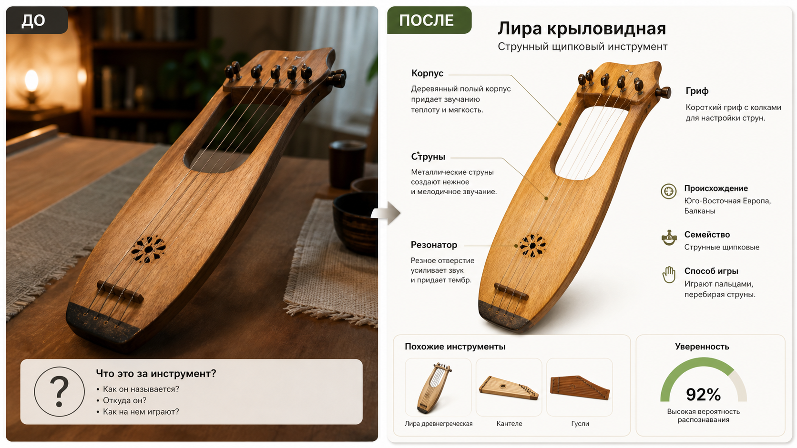

Промтзилла
Этот сценарий полезен для редких, народных и старинных инструментов: модель сравнивает форму корпуса, струны, клапаны, мундштук и другие детали.

Пошаговая инструкция
- 1Сделай фото инструмента целиком и отдельно крупно важные детали: струны, клавиши, отверстия, смычок, мундштук.
- 2Загрузи снимок в инструмент определения музыкального инструмента по фото.
- 3Используй промт ниже, чтобы получить не только название, но и объяснение различий с похожими инструментами.
- 4Если инструмент редкий, добавь страну покупки, размер и материал.
- 5Попроси ИИ составить короткую справку для карточки товара, музея или учебного материала.
Пример результата
На обложке показан типичный сценарий: слева обычное исходное фото, справа результат, который можно получить после анализа через инструмент определения музыкального инструмента по фото.
Промт
RU
Определи музыкальный инструмент на фото. Ответ дай структурировано: 1. Основная версия: название инструмента. 2. Семейство: струнный, духовой, ударный, клавишный или другое. 3. Как на нём играют и какой способ звукоизвлечения используется. 4. Вероятное происхождение или культурный регион. 5. Какие детали на фото помогли: корпус, струны, гриф, отверстия, клапаны, форма, декор, материал. 6. Два похожих инструмента и чем они отличаются. 7. Уровень уверенности и что нужно показать на фото, чтобы уточнить ответ. Не придумывай точную модель, если видны только общие признаки. Отделяй факты от предположений.
EN
Identify the musical instrument in the photo. Give a structured answer: 1. Main version: instrument name. 2. Family: string, wind, percussion, keyboard, or another type. 3. How it is played and how it produces sound. 4. Probable origin or cultural region. 5. Which details helped: body, strings, neck, holes, valves, shape, decoration, material. 6. Two similar instruments and how they differ. 7. Confidence level and what should be shown in another photo to clarify the answer. Do not invent an exact model if only general traits are visible. Separate facts from assumptions.
Важно
У редких народных инструментов бывают региональные варианты с похожей формой. Для точного музейного или оценочного описания лучше сверять ответ со специалистом.
Теги